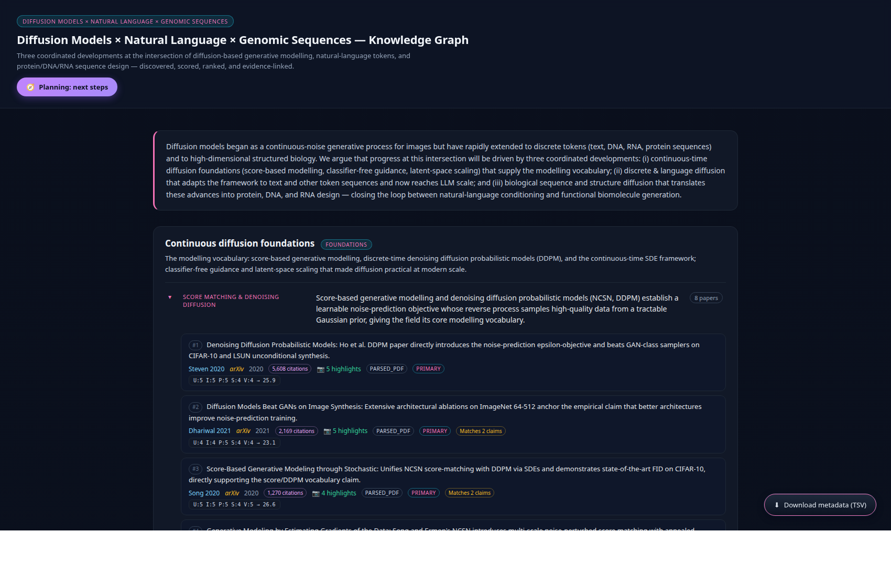

78Papers
9Claims
3Paradigms
67Evidence rows
205Paragraph PNGs
57Local PDFs
73 %OA hit-rate
2019–2025Year range
Diffusion models began as a continuous-noise generative process for images, then extended rapidly to discrete tokens (text, DNA, RNA, protein sequences) and to 3D protein backbones. We argue that progress at this intersection is driven by three coordinated developments: (i) continuous-time diffusion foundations that supply the modelling vocabulary, (ii) discrete & language diffusion that adapts the framework to text and other token sequences at LLM scale, and (iii) biological sequence and structure diffusion that translates these advances into protein, DNA, and RNA design — closing the loop between natural-language conditioning and functional biomolecule generation.
The three paradigms
Continuous diffusion foundations foundations
The modelling vocabulary — score-based generative modelling, DDPM, continuous-time SDE, latent-space scaling.
- Score matching & DDPM — NCSN, DDPM, ADM, EDM
- Continuous-time SDE framework — Score SDE, DDIM, DPM-Solver, probability-flow ODE
- Latent-space + classifier-free guidance — LDM / Stable Diffusion, CFG, Imagen, SDXL
Discrete & language diffusion language
Adapting diffusion to discrete tokens — from D3PM-style Markov chains to LLM-scale parallel decoding.
- Discrete-state Markov chains — D3PM, DiffusionLM, DiffuSeq, Argmax flows
- Score-entropy & masked diffusion — SEDD, MDLM, Simplified Masked Diffusion
- LLM-scale discrete diffusion — LLaDA, DiffuLLaMA, BeyondAR, Plaid
Biological sequence & structure diffusion biology
Diffusion in protein, DNA, and RNA design — the natural-language to functional-biomolecule loop.
- Protein backbone & structure — RFdiffusion, Chroma, RoseTTAFold All-Atom, FoldingDiff
- Protein-sequence diffusion language models — EvoDiff, DPLM, ProteinGenerator
- DNA / RNA nucleotide diffusion — DNADiffusion, DiscDiff, D3, RNAGenesis, DRAKES
⚡ Top-1 picks across all 9 claims
Ranked by journal-IF tier first, then citation count, then publication year.
- foundations-score-and-ddpm: Score SDE (Song 2021), EDM (Karras 2022)
- continuous-time-sde: DPM-Solver (Lu 2022), DDIM (Song 2020)
- latent-and-guidance: Latent Diffusion / Stable Diffusion (Rombach 2022)
- discrete-state-markov: D3PM (Austin 2021)
- score-entropy-masked: SEDD (Lou 2024)
- llm-scale-diffusion: LLaDA (Nie 2025)
- protein-structure: RFdiffusion (Watson 2023)
- protein-sequence: EvoDiff (Alamdari 2023)
- dna-rna-nucleotide: D3 / DiscDiff (2024)
How it was built — the agent pipeline
Same agentic pipeline used for the other two projects. Each agent has one concern and writes to its own canonical file; coordination happens through versioned data files, not direct calls.
Architect → ontology.json
↓
Discoverer (D) → papers.json + candidates.json (OpenAlex / arXiv / bioRxiv)
↓
Scorers ×3 → scored_<paradigm>.json (parallel, one per paradigm)
↓
Reviewer (R) → evidence.json (primary / secondary tiers)
↓
┌───────────┬───────────┬───────────┐
▼ ▼ ▼ ▼
Fetcher (P) Ranker (K) Linker (H) Viewer (V)
↓
multi-sentence paragraph PNGs
↓
Auditor → standalone graph.html
Preview

📋 Evidence view — paradigm cards · expandable claims · ranked evidence with rubric pills · multi-screenshot modal stacks
What's inside this folder
diffusion_models/ ├── index.html ← you are here (project overview) ├── graph.html ← the interactive knowledge graph ├── README.md ├── assets/ │ ├── evidence/ 205 paragraph-screenshot PNGs │ └── qa/ preview screenshots ├── metadata/ │ ├── ontology.json 9 claims + rubric + venue allowlist │ ├── papers.json 78-paper registry (DFM-001..078) │ ├── candidates.json all scored (paper, claim) rows │ ├── evidence.json 67 promoted evidence points │ ├── promotion_log.md audit trail │ ├── rank_log.md per-claim ranked tables │ └── pdf_fetch_log.json OA-fetch per-paper status └── scripts/ topic-agnostic CLI for re-running the pipeline